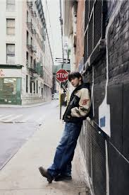

- Kim Seokjin
-
En primer lugar tenemos a el mayor del grupo por lo tanto fue el primero en alistarse y dejarnos una hermosa melodia para sintonizar llamada "The astronaut"
- Jung Hoseok
- Para el segundo lugar esta Jhope con su albúm en solitario "Jack in the Box" en el cual hay multiples canciones y muy aparte de esto lanzó su cancion "On the street" con el cantante J.Cole en forma de despedida a army

Algunas canciones del albúm son:
- Arson
- More
- Pandora´s box
- Safety zone
- Future
- Min Yoongi(Suga/Agust D)
- El tercer miembro de la banda en alistarse fue suga el cual nos dejo su albúm "D-Day" en el cual hay un canción especialmente para army llamada"Amigdala"
Canciones de Dday:
- Snooze
- Haegeum
- HUH?
- SDL
- Kim Namjoon
- Nam queda entre 4to y 5to ya que se elisto junto con Kim Taehyung y nam nos dejo su albúm "Indigo" con el cual sabemos que queria seguir en nuetras mentes, en los personal mi canción favorita es "Change pt2"
Canciones de INDIGO:
- Stile life
- Change pt2
- All day
- Lonely
- Kim Taehyung
- como ya habia dicho es entre el 4to o 5to integrante de haberse enlistado porque se fue junto con Kim Namjoon, el nos dejo su hermoso albúm "layover", en general habla sobre amor y creo que es dedicado para army, la canción mas escuchada es"Rainy days"
Canciones de LAYOVER:
- Park Jimin
- Para 6to o septimo lugar tenemos a nuestro hemoso gato calico el cual nos dejo una hermosa canción llamada"Closer Than This" y su magnifico albúm "Face" el cual nos muestra su faceta poderosa
Canciones de FACE:
- Set me free pt2
- Like crazy
- Alone
- Face-off
- Jeon Jungkook
- El septimo o 6to integrante en alistarse fue nuestro poderosisimo Maknae de oro el cual nos dejo impresionados sobre todo porque lanzo su albúm"Golden" en el cual nos encantaron todas y cada una de sus canciones y en o personal me gusto más"Shot glass of tears
Canciones de GOLDEN:
- Shot glass of tears
- Standing next to you
- Yes or No
- Hate you